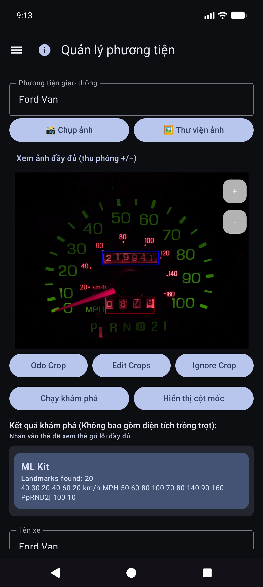
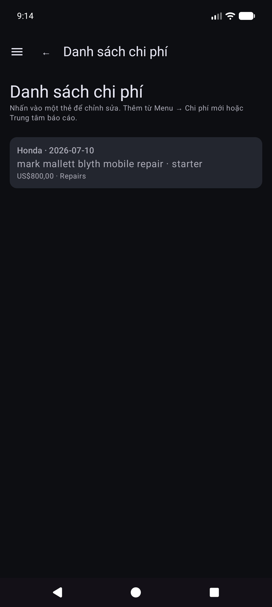
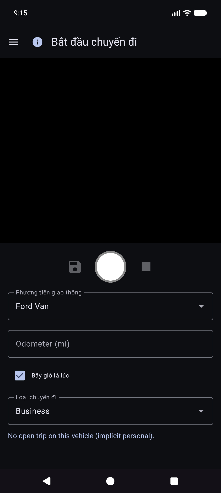
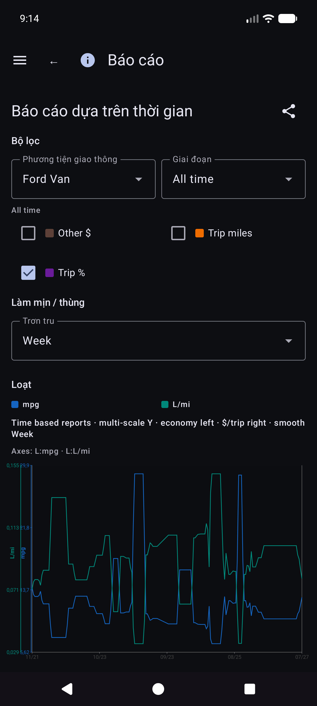
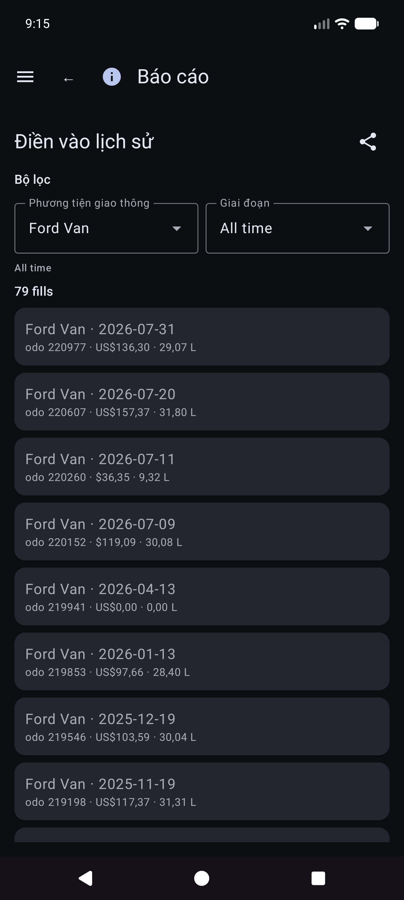
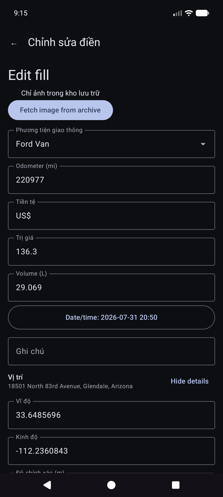
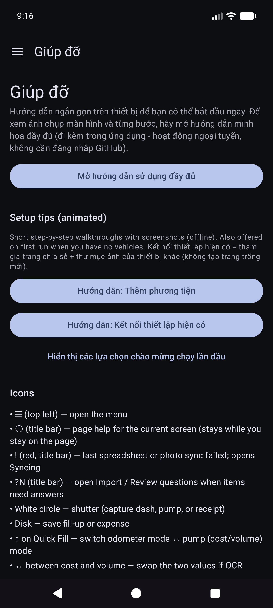

Vehicle Expenses Automated — full illustrated user manual (HTML for browsers). Edit source: docs/i18n/vi/user-manual.md; regenerate with ./scripts/render-user-manual.sh.
Chỉnh sửa nguồn (Markdown). Trình duyệt và trình đọc trong ứng dụng mở HTML được kết xuất:
- Web:docs/user-manual.html(tạo lại bằng./scripts/render-user-manual.sh)
- Ứng dụng: Trợ giúp / Giới thiệu → hướng dẫn đầy đủ (HTML + ảnh chụp màn hình đi kèm)Không trỏ người dùng cuối tới các URL
.mdthô — trình duyệt chỉ hiển thị văn bản thuần túy.
Camera đầu tiên theo dõi việc đổ xăng và chi phí xe, với tính năng đồng bộ hóa và sao lưu đa thiết bị tùy chọn trong tài khoản đám mây của bạn.
Đây là hướng dẫn đầy đủ (ảnh chụp màn hình + từng bước). Trên điện thoại, Menu → Trợ giúp là hướng dẫn bắt đầu ngắn hơn.
Không được đề cập ở đây: Nhập Ảnh cũ, Thử nghiệm căn chỉnh và Thử nghiệm bơm (công cụ dành cho nhà phát triển / nâng cao).
Chúng xuất hiện trên màn hình chính. Biết chúng giúp tiết kiệm rất nhiều cuộc săn bắn.
| Ở đâu | Biểu tượng / điều khiển | Nó làm gì |
|---|---|---|
| Thanh trên cùng | ☰ Thực đơn (hamburger) | Mở ngăn điều hướng |
| Thanh trên cùng | ⓘ (trang trợ giúp) | Trợ giúp ngắn gọn cho trang hiện tại (bên cạnh menu nếu có) |
| Thanh trên cùng | ?N (màu vàng) |
Các câu hỏi đánh giá nhập đang chờ xử lý — mở Đánh giá nhập |
| Thanh trên cùng | *! (đỏ) | Gần đây, đích đến của bảng tính hoặc ảnh không thành công — mở Đang đồng bộ hóa để khắc phục |
| Thanh trên cùng | ☰ + ← | Báo cáo con và danh sách Chi phí hiển thị menu và quay lại cùng nhau; Trung tâm báo cáo chỉ có trong menu |
| Cài đặt / chỉnh sửa nhiên liệu | ← | Quay lại (bảng tính cài đặt/chỉnh sửa ảnh và nhiên liệu vẫn tập trung trở lại) |
| Điền nhanh | Vòng tròn màu trắng (màn trập) | Chụp màn hình đồng hồ đo đường hoặc máy bơm cho OCR |
| Điền nhanh | Đĩa / Lưu | Tiết kiệm nhiên liệu (cần một chiếc xe và ít nhất một trong số odo/khối lượng/chi phí) |
| Điền nhanh | ↕ mũi tên (chuyển đổi chế độ) | Chuyển đổi giữa chế độ đo đường và chế độ bơm (chi phí/khối lượng). Đường viền màu xanh lá cây làm nổi bật nhóm trường đang hoạt động |
| Điền nhanh | ↔ mũi tên (giữa chi phí và khối lượng) | Hoán đổi chi phí và khối lượng nếu OCR đặt chúng vào sai trường |
| Điền nhanh | Thu phóng 1x / … | Tỷ lệ thu phóng của máy ảnh khi ống kính hỗ trợ chúng |
| Điền nhanh (sau khi chụp) | Làm mới trên nút chính | Loại bỏ bản xem trước và quay lại camera trực tiếp |
| Điền nhanh (trong khi xử lý) | X trên nút chính | Hủy chụp/OCR đang thực hiện |
| Chi phí | Lưu | Tiết kiệm chi phí |
| Chi phí | Vòng màn trập | Chụp ảnh biên nhận |
| Chi phí | Thư viện | Chọn hình ảnh biên nhận từ thư viện |
| Chi phí | Thi lại | Xóa ảnh biên lai hiện tại và chụp lại |
| Chi phí / Quản lý phương tiện | *** / −** FAB | Thu phóng bản xem trước ảnh |
| Hộp thoại cột mốc | Chỉnh sửa OCR | Sửa hoặc thêm văn bản mốc mà công cụ bỏ sót |
| Bảng tính / Biểu mẫu ảnh | 🔍 Tìm kiếm | Duyệt qua Google Drive để tìm trang tính hoặc thư mục (sau khi đăng nhập) |
Bạn có thể nhấn vào ký hiệu tiền tệ trên trường chi phí và G/L trên trường khối lượng: mở một menu nhỏ để thay đổi đơn vị tiền tệ hoặc gallon so với lít cho mục nhập đó.
Ngăn kéo chính: Điền nhanh · Bắt đầu chuyến đi · Quản lý phương tiện · Chi phí mới · Báo cáo · Cài đặt · Đồng bộ hóa · Trợ giúp · Giới thiệu.
Ngăn kéo thử nghiệm (Cài đặt → Hiển thị màn hình thử nghiệm): Thử nghiệm căn chỉnh · Thử nghiệm bơm · Nhập ảnh cũ.
Thông qua trung tâm Báo cáo (không phải ngăn kéo chính): Danh sách chi phí · Điền vào lịch sử.
OCR và so khớp xe tự động hoạt động tốt nhất sau khi bạn đăng ký mỗi chiếc xe với một ảnh bảng điều khiển tham chiếu, cắt đồng hồ đo đường và chạy Discovery để ứng dụng lưu trữ văn bản mốc cho dấu gạch ngang đó. (Cách chọn và khớp các mốc sẽ được ghi lại chi tiết hơn trong bản cập nhật sau.)
Menu → Quản lý phương tiện. Chọn một phương tiện (hoặc Thêm phương tiện mới).


Sau Hiển thị cột mốc, hãy cuộn danh sách và sửa các giá trị. Động cơ đôi khi bỏ lỡ các chữ số nhỏ (ví dụ: đồng hồ 60 ở phía dưới bên phải của cụm). Sử dụng Chỉnh sửa OCR để thêm hoặc sửa chúng để nhận dạng phương tiện luôn đáng tin cậy.

Bạn vẫn có thể sử dụng ứng dụng bằng cách chọn một chiếc xe và nhập đồng hồ đo đường, khối lượng và chi phí vào Điền nhanh — OCR là tùy chọn cho mọi trường. Tính năng nhập thư viện hoạt động đối với ảnh gạch ngang tham chiếu khi bạn không muốn chụp trong ứng dụng.
Mẹo: Sau khi đồng bộ hóa bảng tính, các định nghĩa về phương tiện (cây trồng, cột mốc) sẽ có trong cơ sở dữ liệu cục bộ — bạn không cần phải mở lại Quản lý phương tiện để Điền nhanh để sử dụng chúng.
Ứng dụng được xây dựng để một số điện thoại hoặc máy tính bảng có thể chia sẻ cùng một dữ liệu nhóm và vì vậy bạn có thể giữ bản sao dữ liệu và ảnh của mình khỏi thiết bị. Điều đó được thực hiện với các điểm đến bạn định cấu hình trong tài khoản của bạn hoặc máy chủ tự lưu trữ của bạn — không phải là “Đám mây chi phí phương tiện” do công ty điều hành mà người khác có thể nhìn thấy.
| Loại | Nó lưu trữ những gì | Sử dụng điển hình |
|---|---|---|
| Đồng bộ hóa bảng tính/dạng bảng | Xe cộ, đổ xăng, chi phí (hàng và tab) | Hợp nhất nhiều thiết bị + sao lưu có cấu trúc |
| Sao lưu ảnh | Hình ảnh nhị phân (dấu gạch ngang/bơm/biên nhận/ảnh tham khảo) | Sao lưu ảnh + khôi phục file bị thiếu |
Bạn có thể định cấu hình nhiều đích của từng loại (giới hạn mềm cho mỗi loại). Nhân viên Đồng bộ hóa ngay và nền thủ công chạy những cái đã bật.
Thông tin đăng nhập và mã thông báo vẫn còn trên thiết bị đối với các nhà cung cấp mà bạn chọn (Google, Microsoft, khóa S3, URL tự lưu trữ, v.v.). Đích đến nằm dưới toàn quyền kiểm soát của người dùng — tài khoản Google, OneDrive, bộ chứa MinIO, máy chủ EtherCalc của bạn, v.v. Không có gì được chia sẻ với những người dùng Chi phí phương tiện khác thông qua chương trình phụ trợ được chia sẻ.
Được định cấu hình trong Menu → Đồng bộ hóa → Đồng bộ hóa bảng tính (cũng có thể truy cập được từ các hàng tóm tắt Cài đặt). Tùy chọn bộ chọn hạng nhất:
| Mục tiêu | Ghi chú |
|---|---|
| Google Trang tính | Mặc định chung; các tab dành cho Phương tiện, Chi phí và nhiên liệu trên mỗi phương tiện |
| Excel | Sổ làm việc của Microsoft thông qua liên kết kiểu Đồ thị / OneDrive |
| EtherCalc | Phòng bảng tính cộng tác tự lưu trữ |
| Khác → phụ trợ được triển khai | Baserow, NocoDB, Airtable, PocketBase, Supabase, Firebase, Zoho Sheet |
Deferred / not headless yet (listed under Other but not fully implemented): OnlyOffice, Collabora. Xem thêm chỉ mục self-host.
CSV xuất/nhập (ZIP có cùng bố cục tab) có sẵn trong Cài đặt dưới dạng bản sao lưu di động, độc lập với đồng bộ hóa trực tiếp.
Được định cấu hình trong Menu → Đồng bộ hóa → Sao lưu ảnh (cũng từ các hàng tóm tắt Cài đặt):
| Mục tiêu | Ghi chú |
|---|---|
| Google Drive | Thư mục bạn chọn (duyệt hoặc dán URL) |
| OneDrive | Tài khoản Microsoft + tiền tố đường dẫn |
| S3 | AWS, Wasabi, Cloudflare R2, MinIO, and other S3-compatible endpoints |
| Khác | rclone-backed storage (e.g. WebDAV, SFTP, and other curated remotes available in the in-app picker) |
Setup cheatsheets for self-hosted photo and tabular targets: self-host index.


Vehicles, Expenses, Fuel - {vehicle name}.

Thủ công Đồng bộ hóa ngay cho ảnh là hoàn thành; sao lưu nền thường xử lý các tải lên chỉ đang chờ xử lý theo lịch trình.
Đây là màn hình chính khi bạn mở ứng dụng.
Bạn không cần chọn xe trước. Khi xe có mốc được thiết lập trong Quản lý phương tiện, Điền nhanh tự động phát hiện phương tiện nào từ hình ảnh gạch ngang sau khi bạn chụp đồng hồ đo đường. Bạn vẫn có thể mở menu thả xuống Xe để ghi đè nếu cần.
Ở chế độ đo đường và đóng khung cụm. Hướng dẫn: Nhắm vào đồng hồ đo đường. Nhấn vào màn trập để chụp.

OCR điền Odo và cố gắng khớp xe từ các mốc (xem lại cả hai nếu cần). Nút chính trở thành Thử lại để chụp lại. Hướng dẫn tóm tắt bài đọc.


Bạn tiếp tục điền nhanh cho điểm dừng tiếp theo (các trường sẽ bị xóa sau khi lưu). Làm việc hoàn toàn ngoại tuyến; đồng bộ hóa sẽ chạy sau trong nền khi được định cấu hình.
Mẹo trên màn hình (bên dưới dòng hướng dẫn): Màn trập = chụp · Đĩa = lưu · ↕ = chế độ odo/bơm · ↔ = chi phí hoán đổi/khối lượng.
Menu → Chi phí mới.

Menu → Báo cáo → Danh sách chi phí — duyệt qua các chi phí phi nhiên liệu; mở một mục để chỉnh sửa.

Mở một hàng từ danh sách. Nhà cung cấp, số lượng, chủng loại, xe và mô tả chính xác. Nếu biên nhận chỉ có trong bản sao lưu ảnh (không có tệp cục bộ có thể đọc được), hãy sử dụng Tìm nạp hình ảnh từ kho lưu trữ khi được hiển thị (hoạt động trên các đích ảnh đã định cấu hình).

Menu → Bắt đầu chuyến đi (sau khi điền nhanh vào ngăn). Chụp hoặc nhập đồng hồ đo đường, chọn loại chuyến đi, lưu bằng biểu tượng đĩa. Dừng là phím tắt dành cho Cá nhân hiện tại tại vị trí GPS được giữ. Sử dụng ⓘ để nhắc nhở kiểm soát.

Số lần bắt đầu chuyến đi được lưu dưới dạng hàng nhiên liệu với Loại chuyến đi (không phải lần đổ xăng thông thường). Chúng xuất hiện trong Báo cáo → Số dặm chuyến đi, không phải trong Lịch sử nhiên liệu.
Menu → Báo cáo mở trung tâm sản phẩm (tóm tắt mọi thời đại + thẻ danh mục). Đây là bề mặt báo cáo sản phẩm duy nhất - không có mục ngăn kéo “Báo cáo & Biểu đồ” riêng biệt.

Mở thẻ cho chế độ xe (Tất cả / Mỗi / Đơn), bộ lọc thời gian, biểu đồ và chia sẻ (TEXT / CSV / PDF). Thanh trên cùng về báo cáo trẻ em: ☰ + ← (và ⓘ khi đăng ký).
Thẻ biểu đồ chính. Các số liệu tùy chọn (mpg, khối lượng/khoảng cách chẳng hạn như G/mi, đơn giá chẳng hạn như $/G, chi phí/khoảng cách, $ hàng tháng, số dặm chuyến đi, % chuyến đi theo loại) với các thùng Smooth và thang đo Y độc lập (phổ thông bên trái; tiền và nhóm chuyến đi ở bên phải).


Chi tiết về toán kinh tế: REPORTS_METRICS.md.

Báo cáo → Số dặm chuyến đi — số dặm theo loại, biểu đồ và thứ tự thời gian danh sách chuyến đi bắt đầu / phân đoạn. Nhấn vào điểm bắt đầu thực sự để mở Chỉnh sửa điền cho hàng đó.

Từ Lịch sử điền, Lịch sử nhiên liệu hoặc Số dặm chuyến đi, hãy mở lần điền. Bố cục: xe và đồng hồ đo đường, tiền tệ trước giá thành, khối lượng, ghi chú. Loại chuyến đi chỉ xuất hiện khi hàng bắt đầu chuyến đi. Vị trí có phần tóm tắt cộng với Chi tiết vị trí. Thiếu ảnh cục bộ có nhận dạng đám mây: Tìm nạp hình ảnh từ kho lưu trữ.

Các thẻ danh mục khác bao gồm chi phí theo danh mục, tóm tắt phương tiện và danh sách chi phí.
Tiền sử dụng đơn vị tiền tệ của mỗi hàng khi được đặt. Tổng số tiền tệ hỗn hợp hiển thị tổng phụ cho mỗi loại tiền tệ (không có chuyển đổi ngoại hối im lặng).
Menu → Đồng bộ hóa là trung tâm dành cho bảng tính và đích ảnh (không chỉ được chôn trong Cài đặt).
Trình đơn → Cài đặt.


Đối với các điểm đến, hãy ưu tiên Menu → Đồng bộ hóa. Cài đặt có thể vẫn hiển thị các hàng tóm tắt mở cùng danh sách.
CSV xuất/nhập (ZIP của thẻ Phương tiện / Chi phí / Nhiên liệu) có sẵn trong Cài đặt khi được bản dựng hiện tại cung cấp.
